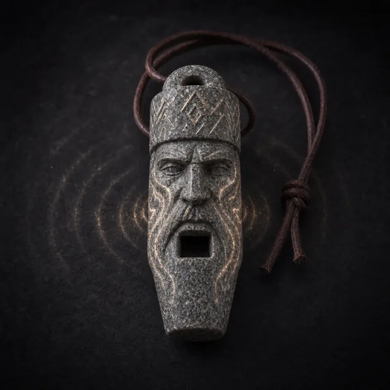

Предмет · undefined · №24
Стоимость Призыва: 2 Вы можете отметить Стресс, чтобы подуть в свисток. Противники в пределах Средней дистанции должны совершить Бросок Реакции (16); при провале до конца вашей следующей активации вы имеете преимущество на атаки против них, а они имеют помеху на реакции против всего, что не видят.
Открыть в генераторе лута